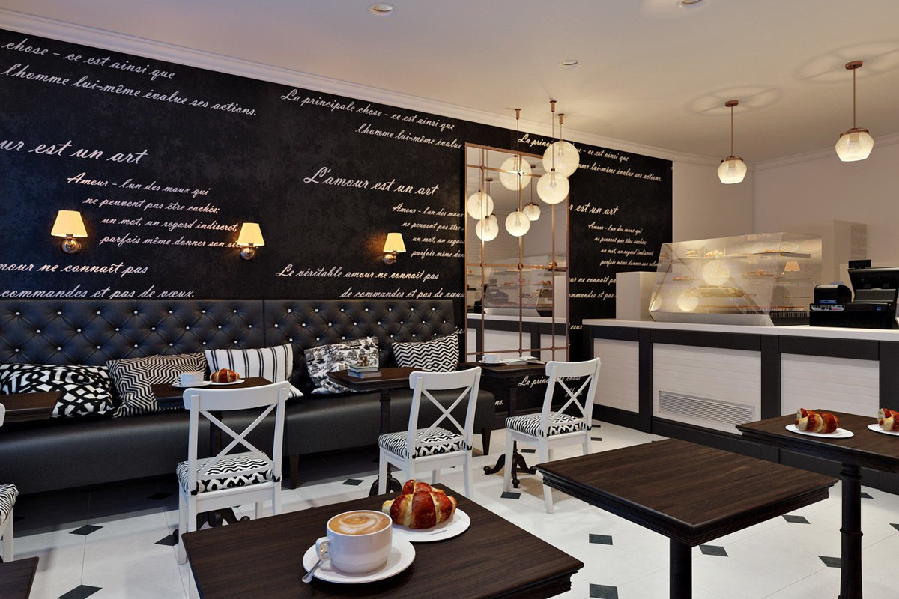

О нас
Наша кофейня создаётся с целью не только быстро и качественного обслуживания посетителей, но и предоставляет возможность отдохнуть в приятной и уютной атмосфере нашего заведения.
В настоящее время такой сектор рынка, как общественное питание процветает. В нашем городе появилось очень много разнообразных заведений, предлагающих свои услуги: рестораны, кафе, фаст-фуды и многие другие. При этом, очень большую популярность получили не какие-то конкретные типы заведений, а так называемый смешанный тип, где предлагают «всего и понемногу». Конечно, подобные заведения достаточно практичны: человек может и пообедать и выпить кофе, там же он может назначить деловую встречу и туда же может зайти после работы, чтобы отдохнуть. Однако, подобные заведения, можно сказать «поставлены на конвейер», там постоянно большое количество людей, так как залы рассчитаны на 50-80 человек минимум, поэтому об уюте и домашней атмосфере в подобном заведении, несмотря на все усилия дизайнеров можно даже не говорить.
Кофейни, как таковые, — явление для России вовсе не новое. Когда-то кофеен по стране было предостаточно. Потом о них надолго забыли. А что может быть лучше классической кофейни? В кофейне можно провести романтическую встречу, почитать газету или любимую книгу, обсудить деловой вопрос или просто отдохнуть, наслаждаясь не только вкуснейшим напитком, но и самой атмосферой заведения. Именно в этом и заключается основная идея нашего заведения. Мы предлагаем не только готовый продукт, но и саму неповторимую атмосферу тепла и уюта, которая должна быть присуща каждой кофейне.
Наша кофейня относится к кофейням «чистого типа». У нас подаются только кофе и десерт к нему. Основная цель нашего заведения – дать возможность людям отдохнуть во время рабочего перерыва, либо после тяжёлого дня, а также предоставить место, где бы можно было посидеть с друзьями и побеседовать за чашкой кофе.
